健康知識分享
日日暖陽短劇《你在焦慮什麼？》
嗨，大家好～我是日日暖陽的湯湯，你的健康管理 × 體重管理師

上面短劇的情節，好笑歸好笑，但你可能也有過這種時候：忙了一整天，晚餐也吃過了，就是還想來點什麼。一包餅乾、一杯手搖，吃完當下好像鬆了一口氣，過一會兒又開始懊惱：「我明明在控制體重，怎麼又忍不住。」
如果你也是因為「我知道不該吃，可是停不下來」這句話點進來，先跟你說：這不是你意志力差。
這種狀況有個名字，叫做情緒性進食。這篇想帶你搞懂它是什麼、怎麼分辨自己是真的餓還是心裡餓，以及為什麼光靠忍，常常忍不住。
📖 本文目錄
情緒性進食是指身體並沒有真的需要食物，而是因為情緒想吃東西。壓力、疲累、焦慮、無聊、孤單，甚至是想犒賞自己，都可能變成想吃的理由。
它很常見，幾乎每個人都有過。偶爾一次不是問題，吃東西本來就是讓人開心的事。
會變成困擾，是當它變成處理情緒的唯一方式。只要一累、一煩就想吃，吃完情緒沒有真的解決，還多了一層內疚。體重管理做得很辛苦，卻總在晚上破功，很多時候卡的就是這一段。
換個說法就是：你是真的肚子餓，還是心裡餓？分辨的關鍵在於它怎麼來、想吃什麼、吃完的感覺。可以對照下面這張表：
| 比較點 | 肚子餓（生理餓） | 心裡餓（情緒餓） |
|---|---|---|
| 怎麼出現 | 慢慢來，距離上一餐有一段時間 | 突然來，常常剛吃飽也會出現 |
| 想吃什麼 | 正常的飯菜都可以 | 指定某一種，通常是甜的、鹹的、炸的 |
| 急不急 | 可以等一下再吃 | 現在就要 |
| 吃飽了會停嗎 | 飽了自然會停 | 飽了還想吃，吃到撐才停 |
| 吃完的感覺 | 滿足 | 短暫舒服，接著是內疚或空虛 |
如果當下很難判斷，可以問自己一句話：「如果現在給我一個正常的便當，我會想吃嗎？」
會，代表身體可能真的需要補充；不想吃便當，只想吃洋芋片或蛋糕，那多半是心裡餓了。
另外也可以留意觸發的時間點。
加班完、被主管念完、一個人在家的晚上、終於把孩子哄睡的那一刻，如果想吃的念頭總是在這些時候出現，這個「餓」要的其實不是食物，而是想被安慰。
因為壓力和睡眠，本來就會影響食慾。這不是你不夠努力，是身體本來就會這樣反應。
2001 年刊登在《Psychoneuroendocrinology》的一項研究，找了 59 位健康女性進行壓力測試。結果發現，壓力下身體反應比較大的人，在有壓力的那天吃進了比較多的熱量，而且整體而言，也吃了比較多甜食。
2004 年刊登在《Annals of Internal Medicine》的一項小型研究，找了 12 位健康年輕男性，讓他們分別經歷睡眠不足與睡眠充足的情況。結果發現，睡眠不足時，他們的飢餓感增加了約 24%，整體食慾也增加了約 23%，而且特別想吃高熱量、高碳水化合物的食物。
這兩個研究的人數都不多，不能直接套在每個人身上，但它們說明了一件很多人有感的事：又累又煩的時候，特別想吃高熱量食物，是有原因的。
所以與其怪自己嘴饞，不如先承認：今天真的很辛苦。控制不住的自己，是壓力在找出口。想吃，是身體在找一個最快讓自己好過一點的方法。
很多人面對情緒性進食的第一個反應是：那我就更嚴格。晚上不吃、甜食全戒、少吃一餐補回來。
問題是，這條路很多人都走過，而且常常走不下去。心理學家 Polivy 與 Herman 從 1980 年代開始研究節食行為，提出一個很多人都會陷入的循環：
這個循環最累人的地方在於「全有全無」的想法。規則訂得越死，破功的那一刻越容易整個放掉。
站在體重管理的角度，其實越想壓下去的東西，越會從別的地方冒出來，所以我更在意的是節奏穩不穩，而不是哪一天吃得多完美。三餐規律吃夠，偶爾多吃一點就讓它過去，比嚴格三天、失控一晚，更容易走得長久。
情緒性進食不需要靠「忍住」來解決。以下四個步驟，重點都不是禁止自己吃，而是讓自己在吃之前多一點選擇。
最後還有一個提醒：吃了，也不要懲罰自己。內疚本身就是一種壓力，會讓下一次更想吃。偶爾吃多了，隔天照常吃三餐，就是最好的回到軌道的方法。
情緒餓很少單獨出現，它常常跟累、睡不飽、作息亂掉一起來。只盯著「今天又吃了什麼」，很容易越看越自責；先退一步看看自己整體的狀態，反而比較知道該從哪裡調整。
這也是我在日日暖陽會先做 MEAD 健康需求評估的原因。
MEAD 經絡檢測是一種健康管理輔助工具，透過檢測身體十二經絡的能量平衡狀況，協助了解目前的身體能量狀態，作為日常保養與生活習慣調整方向的參考。
MEAD 不是醫療診斷工具，也不能取代醫師的專業判斷。如果你的狀況符合下一段列出的情形，請優先找專業醫療人員。
如果你出現以下狀況，可能已經不只是偶爾的情緒性進食，建議尋求身心科醫師、臨床心理師或營養師的協助：
如果此刻心裡很難受，也可以撥打衛福部的 1925 安心專線，24 小時免付費，情緒困擾或生活壓力都可以打。
告訴自己：找人幫忙不是軟弱，是照顧自己的一部分。
Q1：情緒性進食和暴食症一樣嗎？
不一樣。情緒性進食是很常見的飲食行為，多數人偶爾都會有，壓力大那幾天多吃一點，過了就回來。暴食症是需要由醫師診斷的飲食疾患，特徵是反覆出現吃到難以停止、失去控制的狀況，而且造成明顯困擾。如果你擔心自己不只是偶爾，請找身心科醫師或臨床心理師評估。
Q2：晚上特別想吃東西，是情緒餓嗎？
不一定。晚上想吃有兩種常見原因：一是白天吃太少、正餐間隔太久，身體是真的餓；二是一天的壓力和疲累到晚上才有空浮上來。先回頭看白天有沒有好好吃飯，如果正餐都有吃夠，晚上還是特別想吃某種零食，情緒的成分就比較大。
Q3：想吃的時候喝水或嚼口香糖有用嗎？
可以當作暫停的方法，讓你多幾分鐘想清楚，但它處理不到情緒本身。如果每次都只是把想吃的感覺壓下去，壓力還在，下一次通常會更強。比較好的做法是暫停之後，問自己現在真正需要的是什麼。
Q4：吃了之後很後悔，隔天要少吃一點補回來嗎？
不建議。隔天刻意少吃，容易讓身體餓過頭，晚上又更想吃，形成限制、失控、再限制的循環。吃多了就算了，隔天照正常的三餐吃，是讓節奏回來最快的方法。
Q5：體重管理一定要戒掉零食甜點嗎？
不一定要完全戒掉。把某種食物列為絕對禁止，反而容易讓它變得更有吸引力。與其戒掉，不如決定什麼時候吃、吃多少，坐下來好好吃完，比躲著偷吃、邊吃邊內疚更容易讓人停得下來。
壓力一來就想吃，不是你意志力差，
下次想吃之前，也溫柔地問問自己：你在焦慮什麼？
如果你最近常常覺得累、睡不飽，又總在晚上破功，不妨先停下來看看自己的身體狀態。歡迎預約日日暖陽的 MEAD 健康需求評估，我們一起看看目前的狀態，再依照你的生活型態，找出最容易開始的那一步。不推銷，也不用有壓力。
＋ 加 LINE 預約評估日日暖陽陪你把照顧自己變成日常。
＊本文為健康知識分享，提供日常飲食與生活習慣觀念參考，非醫療診斷或治療建議。MEAD 為健康管理輔助工具，非醫療診斷。如有情緒困擾、飲食失控或其他身心不適，請尋求身心科醫師、臨床心理師等專業人員協助，或撥打 1925 安心專線。